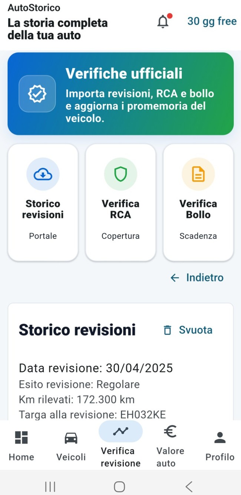

Dati e libretto digitale
Organizza i dati del veicolo e importa le informazioni dal libretto.
L'APP PER LA TUA AUTO
Scopri quanto può valere la tua auto, confronta i valori di mercato e raccogli in un unico posto dati, interventi, spese, documenti e chilometri.

Ricevute, fotografie e appunti sparsi rendono difficile ricordare tutto ciò che riguarda un'auto.
AutoStorico li trasforma in una storia digitale ordinata, consultabile quando serve.TUTTO IN UN UNICO POSTO
Uno strumento semplice per gestire l'auto ogni giorno e conservare informazioni utili nel tempo.
Organizza i dati del veicolo e importa le informazioni dal libretto.
Registra tagliandi, riparazioni, chilometri, costi, ricevute e documenti.
Ricorda revisione, assicurazione, bollo e le scadenze personali dell'auto.
Ottieni una fascia orientativa, confronta il mercato e segui le verifiche nel tempo.
COME FUNZIONA L'APP
Ogni funzione ha uno scopo preciso. Qui trovi le schermate reali e una spiegazione semplice di ciò che puoi fare.
Dalla schermata principale scegli il veicolo e apri subito spese, caratteristiche, intestatario, libretto, promemoria, verifiche, valore e backup.

Inserisci targa, marca, modello e intestatario. Puoi aggiungere una fotografia per riconoscere subito l'auto nel tuo archivio.

Fotografa le pagine, scegli un'immagine dalla galleria o carica un documento. Quando i dati sono leggibili, AutoStorico riconosce le informazioni principali del veicolo.

Registra revisione, difetti riscontrati, manutenzioni, spese e chilometri. Aggiungi anche scadenze personali per avere una cronologia ordinata.

Controlla quanto manca alla revisione e all'assicurazione. Le date importanti restano in evidenza, così puoi organizzarti per tempo.

Accedi alle funzioni per controllare storico revisioni, copertura RCA e bollo. Lo storico importato aiuta a seguire date, esiti e chilometri registrati.

Avvia una stima personalizzata basata su modello, anno, chilometri, alimentazione, cilindrata, stato, lavori e revisioni registrate, insieme ai dati disponibili online.
Il risultato è una fascia di prezzo orientativa per la vendita tra privati, non una perizia ufficiale.

Visualizza la fascia minima e massima ottenuta, salva le verifiche e osserva l'andamento nel tempo. La schermata mostra anche le fonti di mercato considerate.
Questa scheda conserva e confronta i risultati; “Valore della mia auto” serve invece ad avviare una nuova verifica.

Riunisce chilometri, revisione, documenti e lavori registrati. Puoi stampare un riepilogo chiaro per presentare meglio la storia dell'auto a un possibile acquirente.
LIBRETTO DIGITALE AUTO
La scansione guidata del libretto aiuta a raccogliere i dati principali senza doverli cercare ogni volta tra documenti e fotografie.
REVISIONE, BOLLO E ASSICURAZIONE
AutoStorico ti aiuta a ricordare le date importanti e a conservare lo storico delle attività effettuate sul veicolo.
Prova AutoStoricoCon il dossier di vendita puoi presentare in modo ordinato gli interventi registrati e valorizzare la cura dedicata al veicolo.
IDEATA DA GIACOMO ABBATE
Scarica AutoStorico e inizia a organizzare manutenzioni, documenti, costi e scadenze.
Scarica su Google Play